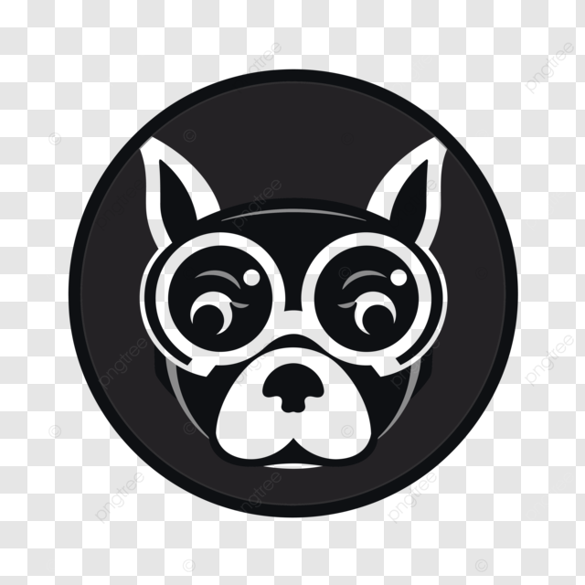

The Glasses DogThe Glasses Dog is an innovative platform powered by n8n, designed to help individuals and businesses streamline workflows and boost productivity. Our mission is to make automation accessible to everyone.
Our platform seamlessly integrates with a variety of tools and services, enabling you to create custom automated workflows tailored to your unique needs. Explore our services and discover how we can transform your business processes.